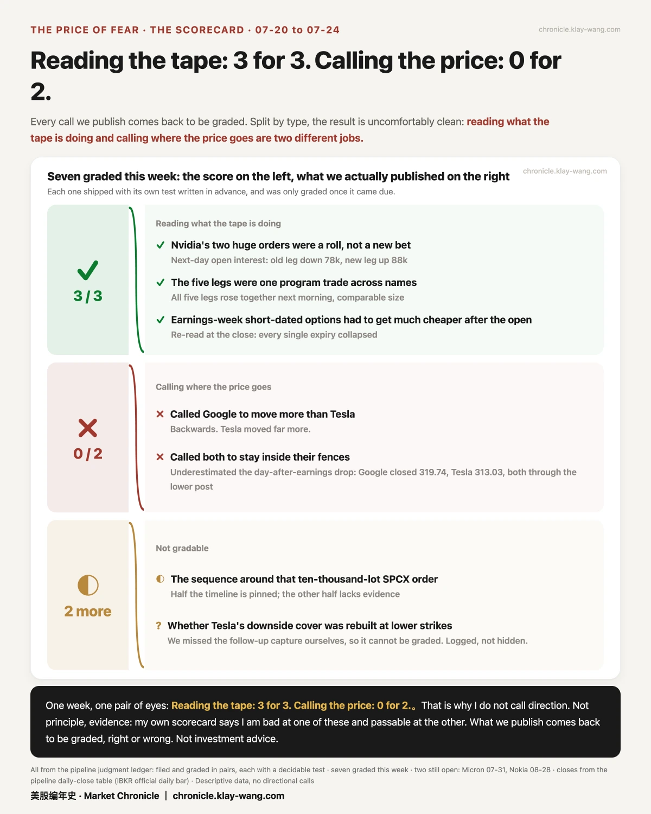
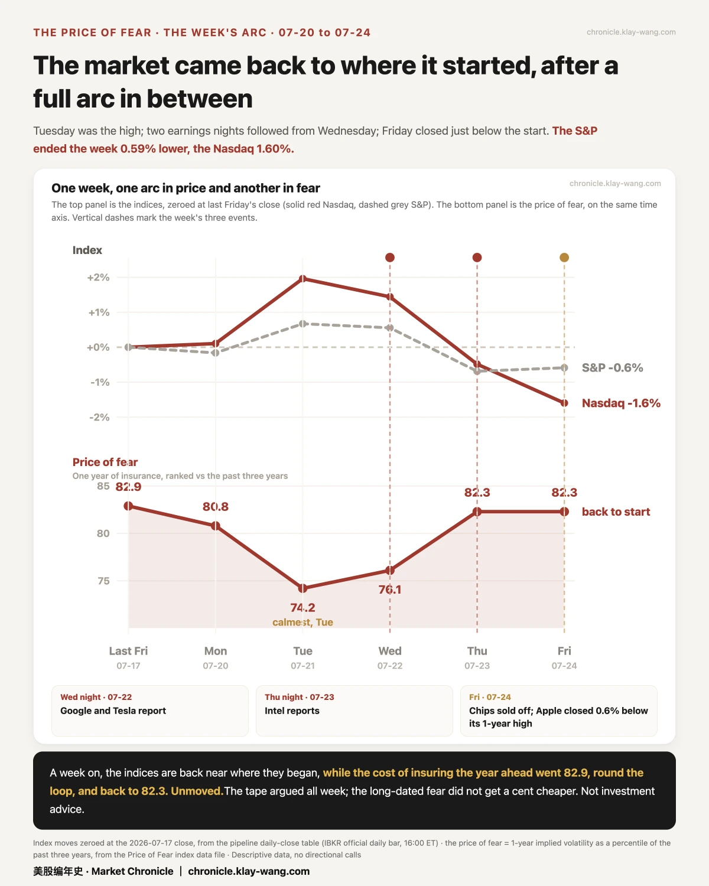

美股跌到位了吗？· 7.20-7.24 本周回顾
• Done falling? We don't guess. But after a week of hits, the price of one-year insurance moved just 1.9% — the people selling protection didn't reprice the road
• This week's scorecard: 7 calls settled — 3 right, 2 wrong. Both misses were the same miss: earnings bills come due the next day
• Two grenades, one evening: the Fed and Meta report on the same night. Meta's fence is ±8.01%, twice as wide as Apple's
📒 The scorecard: what we got right, what we got wrong
One line: every call we publish comes back for settlement — wins and losses alike.
The misses first.
On Wednesday we made two calls: Google would move more than Tesla on earnings night, and neither would break out of the range the market had priced in.
First call: wrong. Tesla moved more.
Second call looked right that night — both stayed inside their bands. Then came the next day: Tesla −14.5%, Google −7.1%, and by Friday's close both had fallen through the bottom of their bands (Google closed 319.74 vs. a floor of 329.17; Tesla 313.03 vs. 359.85). Wrong again.
Both misses are the same miss: earnings bills come due the next day. We mistook one night's range for the whole ride's fence.
And one piece of homework we failed: a call required checking open interest before Friday's open. We missed the window; the contracts expired and settled to zero. Permanently unverifiable. Logged as cannot-judge. No excuses.
Now the hits. Three, all the same kind.
That roughly $300M Nvidia print: we called it a position moving house, not a new bet — logged the same day, judgment first, verdict later — and wrote down the two numbers the next morning should show: old position down ~80k contracts, new one up ~88k. The verdict: −78,471 and +88,009. Both matched.
Five legs of ~11.2k contracts each, across three mega caps, in one day: we called it one institution's programmed trade. Next morning, all five legs' open interest rose in lockstep.
Earnings-week options priced at absurd levels must deflate at the open: the worst one went from around 100 to 41 overnight.
The scorecard in one line: guessing where prices go, 0 for 2. Reading what the money is doing, 3 for 3. We don't guess cards. We count chips.
One more confession: we also cited a wrong closing price this week (an after-hours print instead of the official close). The ledger now carries a dated correction; the verdict stands. We publish our bookkeeping errors too — this ledger is worth something precisely because it can't be quietly rewritten.
🙋 The two questions we get asked most
One line: we don't predict prices. We keep books on what the money does.

Done falling?
We don't know, and we won't guess. But three money moves this week are worth knowing.
First: insurance didn't get more expensive. Crash your car and your premium jumps at renewal — the insurer has decided your road is dangerous. The market took hits all week; short-term fear swung 12.4% top to bottom. Yet the price of one-year protection moved just 1.9%. An accident, and no premium hike. The people selling insurance are the best accountants in the market: no reprice means that in their books, this week was a crash, not a change in the road. The moment you're debating whether to cut or add, this number won't tell you what to do — it tells you the people who trade fear for a living didn't change their price this week.
Second: someone is betting on movement, not direction. Someone spent $5–6M on end-of-August contracts, buying calls and puts in equal size, symmetric around the current price. 99% held overnight — real positions. The expiry covers next week's Fed meeting and the rest of earnings season.
Third: tail risk still has buyers. On Monday someone paid $12,000 for 3,000 contracts of SPY protection that only pays if the market falls 86%. Four cents apiece. Nearly all of it held the next day.
Read together: mainstream money isn't panicking, movement money is paying up, and crash insurance keeps finding buyers. That's not a forecast. That's bookkeeping.

Is memory done falling?
First, a fact that cuts against Friday's tape: the stocks bleeding on Friday were the strongest group of the week. Micron finished the week +8.5% (Friday −7%); SanDisk +6% (Friday −10.8%). Friday gave back less than the week added.
Now the money:
• In the last half hour of Wednesday, someone spent about $100M on Micron calls that only pay if it stands above 996 by month-end. Friday's close: 920.95, 75 dollars below the line. Verdict next Friday; we post it win or lose.
• During Friday's selloff, before the close, another $9.6M bought tickets on Micron returning to 1,000. The day it fell, money showed up to bet on the bounce.
• But check the ticket price before boarding: options on SanDisk cost more than on 96% of days in the past year; Micron, 88%. The stock got cheaper. Boarding didn't.
• Long-dated prices aren't panicking: SanDisk's year-plus options drifted from 118 to 114 over the week. Cooling, slightly.
The money's statement in one line: the short term is a knife fight, the long term hasn't changed its mind, and the entry fee is still near the top of the range.
🗓 Next week: where the money has already voted
One line: we don't guess outcomes. We report the expectations the market has already paid for.
Act one: Meta reports Wednesday after the close — the same night as the Fed decision. Two grenades, one evening.
The market's fence for Meta: ±8.01% ($558–$655), the widest of the four mega caps reporting next week — twice Apple's (±3.9%). Translation: the market has budgeted Meta the most room for surprise. Microsoft reports the same night, fenced at ±6.62%.
Thursday, Apple and Amazon take the stage. Amazon's book is lopsided: bets on up outnumber bets on down 3.4 to 1. Every contract has a buyer and a seller — the ratio doesn't say who wins, only that if it goes the other way, far more faces get slapped.
Act two: two verdicts on memory.
Friday 07-31: that $100M Micron bet settles. 996 is the line.
08-05: SanDisk reports. Its 96th-percentile ticket price goes on trial.
Open cases (Micron 07-31, Nokia 08-28) all come back for settlement — posted win or lose.
This letter won't tell you what to do. It guarantees one thing: everything we say comes back for settlement.

No investment advice. No direction calls. No market timing.